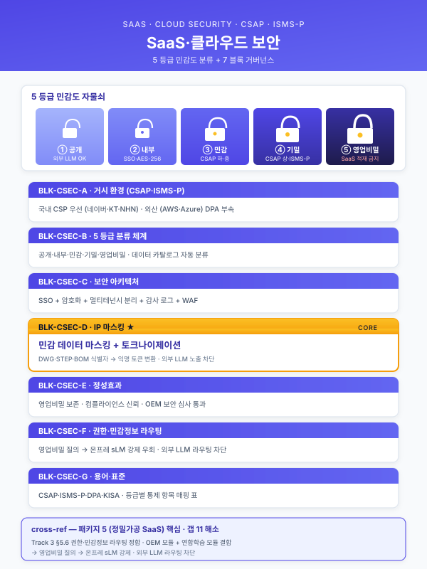
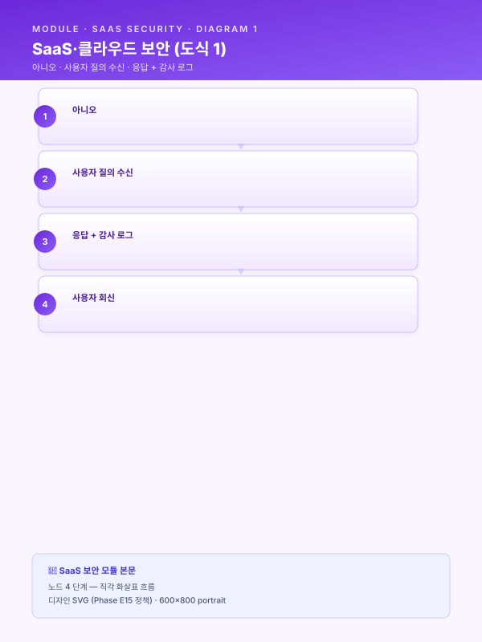

모듈 — SaaS·클라우드 보안 거버넌스 (크로스커팅 재사용 블록)¤
📖 약 24 분 읽기

1. 모듈 목적¤
본 모듈은 클라우드 SaaS 형태로 도입되는 제조 AI 사업 (패키지 5 정밀가공 중소 SaaS 경량 파일럿, 패키지 6 일부 시나리오, 클라우드 종합솔루션 지원사업, 향후 SaaS 트랙 신규 공고 등) 에서 온프레미스 OT/IT 경계 모델로는 다루지 못하는 클라우드 영역의 보안·거버넌스 를 사업계획서 여러 섹션에 일관 톤으로 주입하기 위한 크로스커팅 재사용 블록 세트 이다. (패키지 2 중견 냉연 18 개월 풀 인프라) 의 보안 모델은 사내 폐쇄망과 OT/IT DMZ 경계를 중심으로 설계되었으나, (패키지 5 정밀가공 SaaS 경량) 가 클라우드 SaaS 영역으로 진입하며 CSAP 인증 요구·자격증명 관리·영업비밀 도면 (DWG·STEP) 의 마스킹·SaaS 벤더의 데이터 주권·다중 테넌트 격리 라는 새 보안 영역이 노출되었다. 본 모듈은 이러한 신규 쟁점을 정밀가공 영업비밀 도면·고객사 IP·SaaS 벤더 신뢰의 3 축 으로 정리하고, CSAP·ISMS-P·개인정보보호법·산업기술보호법과의 정합 어휘를 표준화하여, 패키지 5 를 비롯한 SaaS 트랙 사업계획서 7 개 지점에 분산 투입할 수 있도록 한다.
본 모듈이 선제적으로 다루는 쟁점은 (1) 국내 CSP (네이버클라우드·KT클라우드·NHN) vs 외산 CSP (AWS·Azure) 의 데이터 주권·CSAP 등급 차이, (2) 다중 테넌트 격리·암호화·SSO 의 SaaS 표준 보안 아키텍처, (3) 정밀가공 영업비밀 도면 (DWG·STEP·IFC) 의 비식별화·외주 라벨링 시 마스킹·산업기술보호법 정합성, (4) SaaS RAG 환경에서 민감 질의의 온프레 sLM 강제 라우팅 의 4 대 축을 포함하며, 기존 모듈 (CBAM·중대재해·연합학습) 과 동일 7 블록 (A~G) 포맷으로 사업계획서 작성자가 취사선택할 수 있도록 설계되었다.
ℹ️ 페이지 정보 (워크스페이스 메타)
플레이스홀더 범례 — [고객사] 고객사명, [수치] 수치 전반, [기간] 기간, [%] 비율, [CSP] 클라우드 서비스 제공자 (네이버클라우드·KT클라우드·NHN·AWS·Azure 등), [SaaS] 대상 SaaS 제품·플랫폼명, [법령-2026] 시행 시점에 따라 교체가 필요한 법령·고시·인증 가이드 태그, [등급] CSAP·ISMS-P 등급.
본 모듈에 포함된 구체 인증 등급·등급별 요구사항·법령 조문은 모두 "(확인 필요)" 표기 또는 플레이스홀더로 처리하였으며, 실무 투입 전 [법령-2026] 기준의 최신 고시·인증 가이드를 확인하여 채워야 한다.
2. 삽입 지점 맵¤
| 삽입 위치 (상위 문서 섹션) | 본 모듈 블록 | 분량 추천 | 사용 성격 |
|---|---|---|---|
| Track 1 § 1.2 거시환경 | BLK-CSEC-A SaaS·클라우드 도입 거시 (CSAP·데이터 주권) | 1 문단 (220~280자) | 공통 고정 (SaaS 트랙 전반) |
| Track 1 § 2.4 데이터 보유 현황 | BLK-CSEC-B SaaS 적재 데이터의 분류·민감도 | 1 문단 + 표 (240~300자) | 고객사별 교체 (등급 체계 차이) |
| Track 1 § 4.5 모델 선정 또는 § 5.4 시스템 연동 | BLK-CSEC-C SaaS 보안 아키텍처 (SSO·암호화·테넌트 격리) | 2 문단 (380~480자) | 공통 고정 (SaaS 표준 보안) |
| Track 1 § 5.4 시스템 연동 | BLK-CSEC-D 영업비밀 도면·IP 마스킹·접근 권한 | 1~2 문단 (380~520자) | 정밀가공·기계 특화 교체 |
| Track 1 § 6.2 정성 기대효과 | BLK-CSEC-E 보안 거버넌스의 사업 가치 (감사 대비·고객 신뢰) | 1 문단 (220~280자) | 공통 고정 (CBAM-E·SAF-E 와 병기) |
| Track 3 § 5.6 권한·보안 | BLK-CSEC-F SaaS RAG 의 권한·민감정보 라우팅 | 1 문단 (220~280자) | Track 3 선택 삽입 |
| 부록 / 별첨 용어집 | BLK-CSEC-G 클라우드 보안 용어·법령 인덱스 | 0.5 페이지 | 공통 고정 (부록 자산) |
총 7 개 블록 · 7 개 삽입 지점 으로, 기존 CBAM·중대재해·연합학습 모듈과 동일 구조이다.
조합 패턴 예시 - 정밀가공 SaaS 풀패키지 (패키지 5 등): A + B + C + D + E + F + G (7 개 블록 모두 투입) - 온프레 위주 + SaaS 일부 결합: A + C + E (거시·아키텍처·정성 효과만 SaaS 톤으로 보강) - Track 3 RAG 중심 SaaS 사업: A + F + G + (BLK-CSEC-D 도면 마스킹 결합)
3. 본문 블록¤
BLK-CSEC-A — SaaS·클라우드 도입 거시 (CSAP·데이터 주권)¤
- 블록 ID:
BLK-CSEC-A - 용도: Track 1 § 1.2 거시환경 섹션 말미에 "왜 클라우드 SaaS 인가" 의 보안 거버넌스 명분 축으로 투입. 클라우드 도입의 비용 효율과 보안 거버넌스 양립을 한 문단으로 정당화하며, 후속 블록 B·C 와 자연 연결.
- 초안 문장 (공통 고정, 약 270자):
국내 제조업의 클라우드 SaaS 기반 AI 도입은 비용 효율·확장성·신속한 배포의 이점에도 불구하고, 데이터 주권·다중 테넌트 격리·인증 거버넌스 라는 보안 영역의 신규 쟁점을 동반한다. 정부는 공공·민간 클라우드 이용 활성화의 전제 조건으로 클라우드 보안인증제 (CSAP) 를 운영하고 있으며, ISMS-P (정보보호 및 개인정보보호 관리체계 인증) 와 함께 클라우드 SaaS 사업의 기본 신뢰 인프라로 자리 잡았다. 특히 제조 영업비밀과 도면·고객사 IP 가 적재되는 SaaS 의 경우
[CSP]의 데이터센터 물리 위치·국내 법 적용 가능성·운영 인력 국적이 직접적인 리스크 요인이 되며, 국내 CSP (네이버클라우드·KT클라우드·NHN) 우선 검토와 외산 CSP (AWS·Azure) 사용 시 데이터 주권 보장 옵션 확인이 사업계획서 수립의 출발점이 된다. 클라우드 도입률이[수치]% 를 상회하는 산업 환경에서 보안 거버넌스의 양립은 더 이상 선택이 아닌 SaaS 사업의 필수 조건이다.
- 주요 키워드·수치: CSAP, ISMS-P, 데이터 주권,
[CSP], 국내 CSP·외산 CSP, 다중 테넌트 격리, 클라우드 도입률[수치]%. - 대체 문구 옵션
- 외산 CSP (AWS·Azure) 사용 사업: "국내 CSP 우선 검토" 부분을 "외산 CSP 사용 시 한국 리전 (Seoul Region) 적용 + 데이터 주권 부속 계약 (DPA, Data Processing Addendum) 체결" 로 교체.
- 국내 CSP 단일 사용 사업: "외산 CSP (AWS·Azure) 사용 시 …" 부분을 생략하고 "국내 CSP 의 CSAP
[등급]인증 보유 사실" 을 강조. - 하이브리드 SaaS·온프레 분리 사업: 말미에 "민감도 등급에 따라 일부 데이터는 사내 온프레미스에 보관하고 비민감 데이터만 SaaS 에 적재하는 하이브리드 분리 모델을 채택한다" 1 문장 추가.
BLK-CSEC-B — SaaS 적재 데이터의 분류·민감도¤
- 블록 ID:
BLK-CSEC-B - 용도: Track 1 § 2.4 데이터 보유 현황 안쪽에서, 클라우드에 적재될 데이터를 민감도 등급으로 분류하고 등급별 처리 매트릭스를 명시. CBAM-C (데이터 유형) 와 병렬로 배치 가능하며, 본 블록은 "어떤 데이터가 SaaS 에 적재되는가" 에 보안 관점을 더한다.
- 초안 문장 (고객사별 교체, 약 280자 + 표):
[고객사] 가 SaaS 에 적재할 데이터는 5 등급 분류 체계 (① 공개 → ② 내부 → ③ 민감 → ④ 기밀 → ⑤ 영업비밀) 로 구분되며, 등급별로 적재 가능 SaaS·암호화 수준·외부 LLM 전송 가능 여부가 차등 적용된다. 정밀가공 도면 (DWG·STEP·IFC) 과 고객사로부터 수령한 사양서·BOM 은 기밀 또는 영업비밀 등급으로 분류되어 외부 API 전송이 기본 금지되며, CNC 가공 로그·검사 결과 등 공정 데이터는 민감 등급으로 SaaS 적재는 가능하나 외부 LLM 학습 입력은 차단된다. 본 등급 체계는 산업기술보호법·개인정보보호법·고객사와의 비밀유지계약 (NDA) 의 법적·계약적 의무를 데이터 거버넌스 운영 규칙으로 변환한 결과이며, 데이터 거버넌스 위원회 (CISO·법무·생산관리·IT) 의 승인 후 분기 단위로 갱신된다.
등급 예시 데이터 적재 SaaS 외부 LLM 암호화 ① 공개 회사 소개·일반 카탈로그 모든 SaaS 허용 TLS ② 내부 작업표준서·공정 매뉴얼 인증 SaaS 사내 검토 후 TLS + AES-256 ③ 민감 CNC 로그·검사 결과·전력 데이터 CSAP [등급]이상차단 AES-256 + KMS ④ 기밀 고객사 사양서·BOM·원가 CSAP [등급]+ NDA 검증차단 AES-256 + KMS + 별도 키 ⑤ 영업비밀 DWG·STEP 도면·금형 노하우 CSAP [등급]+ 마스킹 적용절대 차단 AES-256 + HSM + 마스킹
- 주요 키워드·수치: 5 등급 분류, 등급별 SaaS·LLM·암호화 매트릭스, 영업비밀 도면 외부 전송 절대 금지, 산업기술보호법, NDA, 데이터 거버넌스 위원회.
- 대체 문구 옵션
- 4 등급 체계 (대기업 표준): "공개·내부·기밀·영업비밀" 4 단계로 축약. 민감 등급을 내부에 통합.
- 6 등급 체계 (방산·기간산업): 기밀과 영업비밀 사이에 "특급기밀" 추가, 산업기술보호법상 국가핵심기술 지정 자료를 별도 등급화.
- 데이터 성숙도 낮은 중소 고객사: "데이터 거버넌스 위원회 (CISO·법무·생산관리·IT)" 부분을 "대표·생산팀장·외부 자문사" 로 축소.
BLK-CSEC-C — SaaS 보안 아키텍처 (SSO·암호화·테넌트 격리)¤
- 블록 ID:
BLK-CSEC-C - 용도: Track 1 § 4.5 모델 선정 또는 § 5.4 시스템 연동에서, SaaS 환경의 표준 보안 아키텍처 (단일 인증·암호화·격리·키 관리·감사 로그) 를 2 문단으로 정의. 폐쇄망 OT/IT 경계 서술 (Track 2 § 4.5) 의 SaaS 영역 대응판.
- 초안 문장 (공통 고정, 약 460자, 2 문단):
본 사업이 도입하는 SaaS 보안 아키텍처는 단일 인증 (SSO) 게이트, 적재 데이터 암호화, 다중 테넌트 격리, 키 관리, 감사 로그 의 5 개 계층으로 구성된다. 사용자 인증은 SAML 또는 OIDC 기반 SSO 게이트를 통해 [고객사] 의 사내 AD·HRM 시스템과 연동되며, 다중 인증 (MFA) 과 인사 변동 시 자동 권한 회수 (Joiner·Mover·Leaver) 가 작동한다. 적재 데이터는 AES-256 으로 암호화 되어 저장되고, 모든 외부 통신 구간은 TLS 1.3 으로 보호된다. 다중 테넌트 환경에서는 논리 분리 (별도 스키마·키스페이스) 를 기본으로 하되, 영업비밀 등급 데이터는 물리 분리 (별도 인스턴스·VPC) 옵션으로 격상 가능하다.
[CSP]와 [고객사] 사내 시스템 간에는 VPC Peering 또는 전용선 (Direct Connect / Cloud Connect) 으로 연결하여 공인 인터넷 노출을 최소화한다.키 관리는
[CSP]의 KMS (Key Management Service) 를 기본으로 하며, 영업비밀·기밀 등급 데이터의 암호화 키는 HSM (Hardware Security Module) 기반 으로 격상되어 [고객사] 가 키 자체를 관리하는 BYOK (Bring Your Own Key) 옵션이 적용된다. 모든 데이터 접근·관리자 작업·시스템 변경은 불변 감사 로그 로 기록되어[기간]보존되며, 외부 감사 (CSAP 갱신·ISMS-P 갱신·고객사 보안 감사) 에서 1 회 추출로 제출 가능하도록 표준화된 형식으로 보존된다. 이 5 계층 아키텍처는 CSAP[등급]· ISMS-P 인증 요구사항을 기본 기준선으로 삼아 설계되었으며, 사업 종료 후에도 [고객사] 가 인증 갱신·고객사 감사·법적 분쟁 대응에 자체적으로 대응할 수 있는 거버넌스 자산으로 남는다.
- 주요 키워드·수치: SSO (SAML·OIDC), MFA, AD·HRM 연동, AES-256, TLS 1.3, 논리·물리 테넌트 격리, VPC Peering, 전용선 (Direct Connect / Cloud Connect), KMS, HSM, BYOK, 감사 로그 보존
[기간], CSAP[등급]· ISMS-P. - 대체 문구 옵션
- 폐쇄망 + SaaS 게이트웨이 사업: 두 번째 문단 끝에 "본 SaaS 는 [고객사] 의 폐쇄망과 직접 연결되지 않으며, 중간 SaaS 게이트웨이를 경유하여 정의된 API 만 양방향으로 통과시킨다" 1 문장 추가.
- 풀 오픈 SaaS (테넌트 격리 최소): "물리 분리 옵션" 부분을 생략하고 논리 분리만 명시.
- 하이브리드 (일부 온프레): 첫 문단 끝에 "민감도 ④·⑤ 등급 데이터는 [고객사] 사내 온프레미스에 보관되며, SaaS 는 ②·③ 등급만 적재한다" 추가.
- 경량 (중소 SaaS 사업): 두 번째 문단의 HSM·BYOK 부분을 "키 관리는
[CSP]의 KMS 를 기본으로 한다" 1 문장으로 축약.
BLK-CSEC-D — 영업비밀 도면·IP 마스킹·접근 권한 (정밀가공·기계 산업 특화)¤
- 블록 ID:
BLK-CSEC-D - 용도: Track 1 § 5.4 시스템 연동에서, 정밀가공 영업비밀 도면 (DWG·STEP·IFC) 의 비식별화·외주 라벨링 시 마스킹·도면 검색 (5.2-f 텍스트 RAG · 5.2-g 형상 임베딩) 시 권한 단계별 결과 노출 차등을 1~2 문단으로 명시. 패키지 5 정밀가공 SaaS 사업의 핵심 차별점 이며, 산업기술보호법 정합 톤을 포함한다.
- 초안 문장 (시나리오별 교체, 약 480자, 1~2 문단):
[고객사] 와 같은 정밀가공 사업자에게 CAD 도면 (DWG·STEP·IFC) 은 단일 자산으로 가장 가치가 높은 영업비밀 이며, 부품 좌표·치수 공차·표면 처리 노하우·금형 설계 정보가 한 파일에 응축되어 있다. 본 사업은 도면이 클라우드 SaaS 에 적재될 때 다음 4 단계 보호 조치를 적용한다. ① 업로드 시점 자동 분류 — DWG·STEP 헤더 메타와 부서·고객사 태그를 추출하여 민감도 등급 (BLK-CSEC-B 의 ⑤ 영업비밀) 을 자동 부여한다. ② 외주 라벨링 시 마스킹 — 외부 라벨링 업체에 도면 데이터를 전송할 때는 좌표·치수 일부를 비식별화 (좌표 정규화·치수 단위 마스킹·고객사명·재질명 토큰 치환) 하여 원본 IP 노출을 차단한다. ③ 도면 검색 시 권한 단계별 차등 노출 — 5.2-f 텍스트 RAG 또는 5.2-g 형상 임베딩 검색 결과를 작업자 (썸네일·치수 마스킹) → 검사원 (썸네일·일부 치수) → 설계자 (전체 도면) 의 3 단계로 차등 노출한다. ④ 외부 LLM 절대 차단 — 도면 검색 질의에 도면 데이터 자체를 외부 LLM API 로 전송하는 것은 절대 금지되며, 임베딩 생성·LLM 응답 생성은 BLK-CSEC-F 의 온프레 sLM 강제 라우팅 규칙에 따라 처리된다.
본 4 단계 보호 조치는 산업기술보호법 의 국가핵심기술·산업기술 보호 원칙과 정합하며, 고객사로부터 수령한 도면에 대해서는 추가로 NDA 조항의 데이터 처리 범위와 일치하도록 운영된다. 도면 마스킹 워크플로 (FIG-CSEC-3) 와 권한 단계별 검색 결과 차등 (FIG-CSEC-4) 은 SaaS 게이트웨이 위에 가시화되어 [고객사] CISO·법무·생산관리가 분기 1 회 거버넌스 회의에서 점검한다.
- 주요 키워드·수치: DWG·STEP·IFC, 자동 민감도 분류, 비식별화 (좌표 정규화·치수 마스킹·토큰 치환), 외주 라벨링 마스킹, 권한 단계별 차등 노출 (작업자·검사원·설계자 3 단계), 산업기술보호법, NDA, 외부 LLM 절대 차단.
- 대체 문구 옵션
- 영업비밀 비중 高 (대기업 부품 협력사·금형사): "산업기술보호법 의 국가핵심기술 …" 부분을 "산업기술보호법상 국가핵심기술 지정 가능성을 사전 확인하고, 지정 자료에 한해 별도 격리 인스턴스로 분리 운영" 으로 강화.
- 영업비밀 비중 中 (자사 부품 위주): 외주 라벨링 마스킹 부분을 "외주 라벨링은 본 사업 범위 외이며, 사내 라벨링으로 대체" 로 단순화.
- 영업비밀 비중 低 (범용 부품·표준품): 4 단계 중 ③ 권한 단계별 차등을 2 단계 (작업자·설계자) 로 축약, 마스킹은 옵션 처리.
- 조선 기자재·기계 산업 (DWG 외 IFC·BIM 비중): "DWG·STEP·IFC" 의 IFC 부분을 강조하고 BIM 메타 추출을 추가.
BLK-CSEC-E — 보안 거버넌스의 사업 가치 (정성 기대효과)¤
- 블록 ID:
BLK-CSEC-E - 용도: Track 1 § 6.2 정성 기대효과에서, 보안 거버넌스가 단순 비용이 아닌 사업 가치 (대기업 공급망 편입·정부지원 가점·고객 감사 대비) 의 직접 자산임을 1 문단으로 정당화. CBAM-E·SAF-E 와 병기되어 정성 효과 트리오 (규제·안전·보안) 를 구성한다.
- 초안 문장 (공통 고정, 약 250자):
본 사업으로 구축되는 SaaS 보안 거버넌스 (CSAP
[등급]인증 정합 · ISMS-P 갱신 대응 · 산업기술보호법 정합 도면 마스킹 · 5 등급 데이터 분류 체계) 는 단순한 보안 비용이 아니라 대기업 공급망 편입·정부지원 사업 가점·고객 감사 대비의 직접 자산 으로 작동한다. 단기적으로는 [고객사] 가 1 차·2 차 협력사로 참여하는 대기업 공급망 평가에서 보안 인증 보유가[%]% 의 가점으로 작용하며, 정부 지원사업 (스마트공장·디지털 경남·대중소상생 등) 의 보안·정보보호 평가 항목에서 인증 보유가 결격 회피 요건이 된다. 중장기적으로는 고객사 (특히 자동차·반도체 OEM) 의 정기·임시 보안 감사에서 공통 증빙 자산으로 재활용되어 감사 대응 공수를 [기간] 단위로 단축한다. 이는 보안 투자 회수가 인증 비용 자체가 아닌 사업 신뢰의 인프라 차원에서 회수되는 구조이며, 6 개월 SaaS 경량 사업에서도 동일하게 적용된다.
- 주요 키워드·수치: CSAP
[등급]인증, ISMS-P, 산업기술보호법, 5 등급 분류, 공급망 가점[%]%, 정부지원 평가 결격 회피, 감사 대응 공수 단축[기간]. - 대체 문구 옵션
- 대기업·지주 차원: 말미에 "또한 그룹 전사 보안 정책 (Zero Trust·SBOM·취약점 관리) 의 클라우드 영역 실행 데이터 기반으로도 활용되어, 그룹 보안 거버넌스와의 정합도를 높인다" 추가.
- 중소 고객사: "대기업 공급망 평가" 부분을 "주요 거래처의 협력사 평가 항목" 으로 순화하고, "1 차·2 차 협력사" 표현 단순화.
- 방산·기간산업 색채: "산업기술보호법" 부분을 "산업기술보호법 + 방위산업기술보호법 (해당 시)" 으로 확장하고, 국가핵심기술 지정 가능성을 추가.
BLK-CSEC-F — SaaS RAG 의 권한·민감정보 라우팅 (Track 3 연계)¤
- 블록 ID:
BLK-CSEC-F - 용도: Track 3 § 5.6 권한·보안 섹션 또는 Track 3 본문 SaaS 분기에서, 민감도 라우팅 — 도면·고객사 IP 포함 질의는 온프레 sLM 으로 강제 라우팅, 일반 지식 질의만 외부 API 허용 의 SaaS 적용판을 1 문단으로 명시. 5.2-f 의 외부 API vs 온프레 sLM 분기를 SaaS 환경으로 확장.
- 초안 문장 (Track 3 선택 삽입, 약 260자):
본 SaaS 의 RAG (Retrieval-Augmented Generation) 엔진은 민감도 라우팅 결정 트리 를 적용하여, 사용자 질의·검색 컨텍스트·반환 문서의 민감도 등급에 따라 LLM 처리 경로를 분기한다. 일반 지식 질의 (공개·내부 등급 문서 기반, 예: 작업표준서·공정 매뉴얼 일반 검색) 는 외부 LLM API (GPT·Claude·Gemini 등) 로 전송 가능하나, 민감 (③) 이상 등급 문서 또는 도면·고객사 IP 가 포함된 질의는 온프레 sLM (EXAONE·HyperCLOVA·Llama 한국어 파생 등) 으로 강제 라우팅 되어 SaaS 외부로 데이터가 이탈하지 않도록 차단된다. 라우팅 판정은 ① 검색된 문서의 등급 메타, ② 질의에 포함된 키워드 패턴 (도면 ID·고객사명·금형 코드), ③ 사용자의 권한 레벨 의 3 축을 결합한 게이트웨이가 수행하며, 모든 라우팅 결정은 감사 로그 (BLK-CSEC-C) 에 기록되어 사후 추적 가능하다. 이 구조는 BLK-CSEC-D 도면 보호 원칙과 직접 연동되며, SaaS 의 비용 효율과 영업비밀 보호의 양립을 가능케 한다.
- 주요 키워드·수치: 민감도 라우팅 결정 트리, 외부 LLM API (GPT·Claude·Gemini), 온프레 sLM (EXAONE·HyperCLOVA), 키워드 패턴 검출, 권한 레벨 결합, 라우팅 감사 로그.
- 대체 문구 옵션
- 외부 API 사용 금지 사업 (방산·기간산업): "일반 지식 질의 …" 부분을 "본 사업은 모든 LLM 호출을 온프레 sLM 으로 처리하며 외부 API 는 사용하지 않는다" 로 교체.
- 외부 API 우선 사업 (비민감 데이터만): 민감도 게이트웨이의 차단 비율을 명시하지 않고 "민감 등급 문서 검색 시 사용자 알림 후 사용자 동의 절차 적용" 으로 완화.
- 경량 (중소 SaaS 사업): "EXAONE·HyperCLOVA·Llama 한국어 파생 등" 의 sLM 라인업을 1 종으로 축소하여 운영 단순화.
BLK-CSEC-G — 클라우드 보안 용어·법령 인덱스 (부록)¤
- 블록 ID:
BLK-CSEC-G - 용도: 부록 또는 별첨 용어집에서, 사업계획서 본문을 읽는 심사자·이해관계자가 클라우드 보안·법령 용어를 빠르게 확인할 수 있도록 제공. 0.5 페이지 내외.
- 초안 문장 (공통 고정, 표 + 짧은 서술):
본 사업계획서에서 사용되는 클라우드 보안·법령 용어는 아래와 같으며, 구체적 인증 등급·시행 시기·조문 인용은
[법령-2026]의 최신 고시·인증 가이드를 우선으로 한다.
용어 약어 정의 (요약) 본문 등장 블록 클라우드 보안인증제 CSAP 한국인터넷진흥원 (KISA) 운영, 클라우드 서비스의 보안 수준 인증 제도 (등급 체계 — 확인 필요) A·B·C·E 정보보호 및 개인정보보호 관리체계 인증 ISMS-P 정보보호 + 개인정보보호 통합 관리체계 인증 A·C·E 개인정보보호법 PIPA 개인정보 처리 기준·정보주체 권리·국외 이전 등 규정 A·B 산업기술보호법 — 국가핵심기술·산업기술의 유출 방지 및 보호 규정 B·D·E 정보통신망법 — 정보통신서비스 제공자의 보안·개인정보 처리 규정 A 단일 인증 SSO SAML·OIDC 기반 단일 자격증명으로 다수 시스템 접근 C 다중 인증 MFA 추가 인증 수단 결합 (OTP·생체·하드웨어 키) C 키 관리 시스템 KMS 암호화 키의 생성·저장·회전·폐기 관리 서비스 C 하드웨어 보안 모듈 HSM 키를 하드웨어에 격리 저장하는 보안 장비 C 자체 키 관리 BYOK 고객이 키 자체를 관리하고 CSP 는 사용만 허가 C 가상 사설 클라우드 VPC CSP 위의 격리된 가상 네트워크 C 데이터 처리 부속 계약 DPA 외산 CSP 사용 시 데이터 주권·처리 범위 명시 계약 A 일반 데이터 보호 규정 (참고) GDPR EU 의 개인정보 보호 규정 (역외 영향) A 캘리포니아 소비자 프라이버시 법 (참고) CCPA 미국 캘리포니아 주의 개인정보 보호 법 (역외 영향) A FAQ 예시 - Q. CSAP 와 ISMS-P 의 적용 범위 차이는? — CSAP 는 클라우드 서비스 자체의 인증, ISMS-P 는 사업자의 정보보호·개인정보보호 관리체계 인증이며 적용 대상이 다르다. 상세 적용 범위는 (확인 필요). - Q. 외산 CSP 사용 시 데이터 주권은 어떻게 보장되는가? — 한국 리전 (Seoul Region) 강제 + DPA 체결 + 데이터 이동 통제로 일정 수준 보장 가능하나, 법령상 한국 영토 내 보관 의무가 있는 데이터는 별도 검토가 필요하다 (확인 필요). - Q. 영업비밀 도면을 SaaS 에 적재해도 되는가? — 적재 자체는 가능하나, BLK-CSEC-D 의 4 단계 보호 조치 적용을 전제로 한다. 산업기술보호법상 국가핵심기술 지정 자료는 별도 격리 검토 필요 (확인 필요).
본 표의 법령 조문·인증 등급·시행 시기는 사업계획서 최종본 작성 시점에
[법령-2026]최신 고시로 검증한다.
- 주요 키워드·수치: 용어 정의 14 종, FAQ 3 종.
- 대체 문구 옵션
- 분량 제약 시: 용어표를 CSAP·ISMS-P·산업기술보호법·SSO·KMS 5 개로 축약.
- 글로벌 SaaS 사업 (해외 진출 결합): GDPR·CCPA 항목을 본문 등장 블록으로 승격하고, 데이터 역외 이전 조항을 별도 추가.
4. 관련 시나리오¤
카탈로그 시나리오와의 매핑¤
| 카탈로그 시나리오 | 본 모듈과의 관계 | 주 사용 블록 |
|---|---|---|
| 패키지 5 전 시나리오 (SCN-MET-01·MET-03·UTL-01·LLM-04·SAF-01) | 본 모듈의 1 차 적용 사례. 정밀가공 SaaS 경량 사업 전체에 본 모듈 7 블록이 분산 투입된다. | A, B, C, D, E, F, G |
| SCN-MET-03 3D 스캔 치수 검사 자동화 | 측정 데이터의 SaaS 적재 + 외주 라벨링 시 마스킹 적용 (BLK-CSEC-D 와 직결). | B, C, D |
| SCN-MET-05 CAD-가공 결합 (도면-경로 자동 변환) | 도면 자체가 학습·추론 입력이 되므로 도면 IP 보호의 직접 대상. | D |
| SCN-LLM-01 SOP RAG | SaaS 환경에서의 SOP 문서 검색 시 민감도 라우팅 적용. | F |
| SCN-LLM-02 장애 대응 지식 RAG | 장애 사례·고객사 정보 포함 가능성 → 민감도 라우팅 필요. | F |
| SCN-LLM-03 표준 작업 문서 QA | 작업표준서가 외부 노출 시 영업비밀 노출 리스크 → 등급 분류 + 라우팅. | B, F |
| SCN-LLM-04 CAD 도면 지능 검색 | 본 모듈 BLK-CSEC-D 의 직접 대상 시나리오. 도면 마스킹·권한 단계별 결과 노출. | D, F |
| SCN-MLO-03 현장 피드백 루프 | SaaS 통합 UI 의 권한·감사 로그 적용. | C, F |
| SCN-SAF-01 영상 안전 AI | 작업자 영상의 개인정보 (얼굴) 처리 → 개인정보보호법 정합. | B, C |
| 5.2-g 도면 형상 임베딩 (G6 카드) | 본 모듈 BLK-CSEC-D 와 직결. 도면 임베딩 생성·검색 시 IP 보호의 직접 대상이며 G6 카드와 본 모듈은 병렬 자산. | D |
본 모듈이 지원하는 시나리오 확장¤
- SaaS-온프레 하이브리드 시나리오 (신규 후보): 민감도 등급에 따라 사내 온프레와 SaaS 를 동적 분기하는 시나리오. BLK-CSEC-B 의 등급 매트릭스와 BLK-CSEC-F 의 라우팅을 결합.
- 다중 고객사 테넌시 시나리오 (신규 후보): 정밀가공사가 자사 SaaS 를 다른 고객사에도 제공할 때의 다중 테넌트 격리 + 고객사별 NDA 정합 운영.
- SaaS 보안 감사 자동화 시나리오 (신규 후보): BLK-CSEC-C 의 감사 로그를 분기 1 회 자동 추출·CSAP·ISMS-P 갱신 대응 패키지화.
5. 삽화·도식 후보¤
본 모듈을 사업계획서에 삽입할 때 함께 사용할 수 있는 삽화·도식은 아래와 같다. 모두 Mermaid 또는 구조화된 표로 초안 작성 후 실제 문서에서 디자인 툴로 재제작한다.
| 도식 ID | 제목 | 배치 | 형식 |
|---|---|---|---|
| FIG-CSEC-1 | SaaS 보안 아키텍처 (SSO·암호화·테넌트 격리) | BLK-CSEC-C 직후 | Mermaid flowchart LR 5 계층 |
| FIG-CSEC-2 | 데이터 5 등급 × SaaS 처리 매트릭스 | BLK-CSEC-B 직후 | 5 × 5 매트릭스 표 (등급 × 처리 차원) |
| FIG-CSEC-3 | 도면 마스킹 워크플로 (외주 라벨링 시) | BLK-CSEC-D 직후 | Mermaid flowchart LR 6 노드 |
| FIG-CSEC-4 | 민감도 라우팅 결정 트리 (온프레 sLM vs 외부 API) | BLK-CSEC-F 직후 | Mermaid flowchart TD 결정 트리 |
| FIG-CSEC-5 | 보안 인증 로드맵 (CSAP → ISMS-P → 산업기술보호) | BLK-CSEC-E 직후 | Mermaid gantt 또는 단계 다이어그램 |
FIG-CSEC-4 민감도 라우팅 결정 트리 (Mermaid 예시)

이 결정 트리는 BLK-CSEC-F 본문의 3 축 판정 (등급 메타 · 키워드 패턴 · 권한 레벨) 을 시각화한 것이며, 게이트웨이 구현 시 동일 로직으로 작동한다.6. 유지보수 지침¤
CSAP·ISMS-P·산업기술보호법·개인정보보호법은 [연도] 년 이후에도 시행 규칙·인증 가이드가 연 1~2 회 개정될 가능성이 높다. 또한 SaaS 벤더 ([CSP]) 의 침해·데이터 유출 사고 발생 시 본 모듈의 거시 환경·정성 효과 블록도 갱신되어야 한다. 본 모듈의 유지보수는 태그 기반 검색 → 해당 블록 수정 → 연동 블록 정합성 확인 의 3 단계 절차를 따른다.
| 개정 사유 | 수정해야 할 블록·위치 | 사용 태그 |
|---|---|---|
| CSAP 등급 체계·인증 범위 개정 | BLK-CSEC-A "CSAP", BLK-CSEC-C "CSAP [등급]", BLK-CSEC-E "CSAP [등급] 인증", BLK-CSEC-G 용어표 |
[등급]·"CSAP" 문자열 |
| ISMS-P 통합 인증 가이드 개정 | BLK-CSEC-A·C·E·G | "ISMS-P" 문자열 |
| 산업기술보호법 개정 (국가핵심기술 지정 범위 변경) | BLK-CSEC-B 5 등급 분류, BLK-CSEC-D 도면 보호 4 단계, BLK-CSEC-G 용어표 | "산업기술보호법" 문자열 |
| 개인정보보호법 개정 (국외 이전 규정 강화) | BLK-CSEC-A 데이터 주권, BLK-CSEC-G FAQ Q2 | "개인정보보호법"·"DPA"·"국외 이전" 문자열 |
[CSP] 의 CSAP 등급 변경·신규 인증 획득 |
BLK-CSEC-A "국내 CSP (네이버클라우드·KT클라우드·NHN)" 열거 부분 | [CSP] |
[CSP] 침해·데이터 유출 사고 발생 |
BLK-CSEC-A 거시 환경, BLK-CSEC-E 정성 효과의 가점 비율 | [CSP]·[%] |
| GDPR·CCPA 등 해외 규정 개정 | BLK-CSEC-G 용어표 (해외 SaaS 사업 시) | "GDPR"·"CCPA" 문자열 |
| 고객사 NDA 조항·도면 보호 요구 변경 | BLK-CSEC-D 마스킹 4 단계, BLK-CSEC-B 등급 매트릭스의 NDA 검증 항목 | "NDA"·"비식별화" 문자열 |
| sLM 모델 업데이트 (EXAONE·HyperCLOVA 신버전) | BLK-CSEC-F 라우팅 본문, FIG-CSEC-4 다이어그램 | "EXAONE"·"HyperCLOVA" 문자열 |
정기 점검 주기 — 분기 1 회 [법령-2026] 태그가 포함된 본문·FAQ 를 순회 점검하며, 연 1 회 전체 블록을 KISA·과기정통부·산업통상자원부·개인정보보호위원회 최신 고시와 대조한다. 신규 SaaS 사고 (벤더 침해·데이터 유출) 발생 시 BLK-CSEC-A·E 부분을 수시 갱신한다.
7. 확인 필요 항목 (실무 검증 후 채움)¤
아래 항목은 본 모듈 초안 작성 시점에서 추측 기입을 금지한 영역 으로, 사업계획서 투입 전 사용자 (실무 담당자) 가 최신 고시·공식 문서를 근거로 확인·채움해야 한다.
- CSAP 등급별 인증 범위·소요 기간·비용 — 현행 CSAP 등급 체계 (간편·표준·확장 등) 와 등급별 적용 가능 SaaS 유형, 인증 소요 기간 및 비용 (확인 필요).
- CSAP 와 ISMS-P 의 적용 범위 차이 및 동시 보유 시 효익 — 두 인증의 중복·구분·통합 운영 가능성 (확인 필요).
- 산업기술보호법상 정밀가공 도면의 보호 범위 — 일반 도면 vs 국가핵심기술 지정 자료의 구분 기준, 영업비밀 침해 시 형사·민사 책임 (확인 필요).
- 국내 주요 CSP (네이버클라우드·KT클라우드·NHN) 의 CSAP 등급 현황 — 각 CSP 의 보유 인증·서비스별 인증 범위 (확인 필요).
- 외산 CSP (AWS·Azure·GCP) 의 한국 리전 데이터 주권 보장 옵션 — Seoul Region 적용 범위, DPA 체결 가능 조건, 한국 영토 내 보관 의무 데이터의 처리 방법 (확인 필요).
- 개인정보보호법 국외 이전 규정의 SaaS 적용 — 동의·계약·인증 등 국외 이전 근거의 SaaS 환경 적용 사례 (확인 필요).
- 다중 테넌트 격리의 인증 기준 — CSAP·ISMS-P 가 요구하는 논리·물리 분리 수준 (확인 필요).
- 감사 로그 보존 기간 — CSAP·ISMS-P·개인정보보호법·산업기술보호법별 요구 보존 기간 차이 (확인 필요).
- sLM (EXAONE·HyperCLOVA·Llama 한국어 파생) 의 SaaS 환경 라이선스 — 상업적 사용·배포·수정 권한 (확인 필요).
- BLK-CSEC-D 의 도면 마스킹 알고리즘 표준 참고 자료 — 좌표 정규화·치수 마스킹·토큰 치환의 산업 표준 또는 학술 참조 (확인 필요).
- BLK-CSEC-E 의 대기업 공급망 평가 가점 비율
[%]— 자동차·반도체·디스플레이 등 OEM 별 보안 인증 가점 실제 수치 (확인 필요). - BLK-CSEC-G 용어표의 법령 조문·인증 등급 — 본 모듈 작성 시점의 조문·등급은 모두 (확인 필요).
📌 이 페이지 정보 (개발자용)
- 원본 파일:
모듈_SaaS_클라우드_보안.md - 자산 군: 🧩 Cross-cutting 모듈
- slug 경로:
module/saas-security.md - 워크스페이스 정책: 원본 .md 수정 0 — hooks 로만 시각 변환
- 자산 자족성 정상화: Phase E7 완료 (잔여 외부 갭 4)